Leh · Ladakh · Himalayas
Discover Ladakh.
Your Way.
Private taxi tours with Nazir Hussain — Leh's trusted local guide, years of experience on the roof of the world.
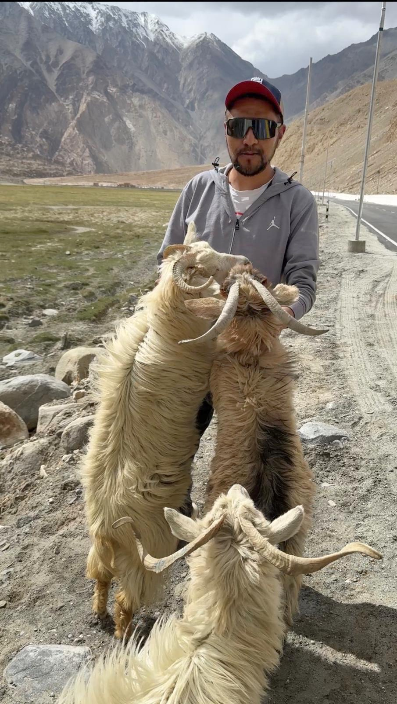
Your guide
Meet Nazir Hussain
Born and raised in Leh, Nazir Hussain has spent a lifetime navigating Ladakh's extraordinary landscapes — from the turquoise stillness of Pangong Lake to the windswept heights of Khardung La. He doesn't just drive these roads; he knows their stories.
What sets Nazir apart is his genuine care for every traveller he guides. He'll adapt your itinerary to the altitude, suggest the monastery that isn't on the tourist map, and make sure your tea break lands at exactly the right viewpoint. Fluent in Hindi and Ladakhi, and able to manage comfortably in English, he's a bridge between the world you've come from and the one you're discovering.
Nazir is also, by every measure, an exceptionally safe driver. Ladakh's roads demand genuine respect — landslides close passes without notice, mountain tracks narrow to a single lane at altitude, and conditions can change completely within a few kilometres. Self-driving through Ladakh might seem like an adventure, but the terrain has caught out many experienced drivers who underestimated it. Travelling with someone who has navigated these routes hundreds of times — who knows every switchback, every seasonal hazard, every shortcut when the main road is blocked — is not a luxury. It's the difference between a holiday and a headache.
What we offer
Every Detail, Handled
From the first road out of Leh to the last sunset at camp, Nazir takes care of the logistics so you can lose yourself in Ladakh.
Personalised Itineraries
Tailored day-by-day routes built around your interests, pace, and altitude acclimatisation needs. No two trips are the same.
Private Vehicle Hire
Comfortable Toyota Innova Crysta for full-day or multi-day contract hire — spacious, reliable, and built for mountain roads.
Permit Assistance
Inner Line Permits (ILP) and restricted area permits arranged without the stress. Nazir knows the process inside out.
Local SIM Cards
Guidance and help obtaining a working local SIM so you stay connected throughout your Ladakh stay.
Bike Rental Coordination
Connect with trusted local partners for Royal Enfield and other motorcycle rentals, vetted for quality and safety.
Oxygen Supply
Supplemental oxygen cylinders available for high-altitude destinations — Khardung La, Umling La, Hanle, Pangong — for peace of mind.
Family & Group Travel
Spacious vehicle and itineraries thoughtfully adapted for families with children, seniors, or larger groups.
Cultural Insight
Deep knowledge of monasteries, festivals, local traditions, and the hidden gems that don't make the guidebooks.
Homestay Recommendations
Access to great homestays at fair prices through Nazir's trusted local network — warm, authentic stays that most visitors never find on their own.
Why choose us
The Nazir Difference
Roof of the World,
Known Like Home
Born and based in Leh, Nazir knows every road, shortcut, and hidden viewpoint — from the famous passes to the valleys rarely visited.
Safe Hands
on Every Road
Nazir is a highly experienced, safety-conscious driver. Ladakh's passes, landslides, and unpredictable road conditions catch many self-drivers off guard. Someone who knows every kilometre of these routes is your greatest asset for a safe holiday.
A Local Network
You Can Trust
From permits to SIM cards to oxygen, Nazir's connections make the logistics of Ladakh travel genuinely seamless.
Journeys That
Stay With You
Travellers consistently say that Nazir's warmth, knowledge, and dedication made their Ladakh trip something they'll carry with them forever.
Landscapes & moments
Ladakh Through the Lens
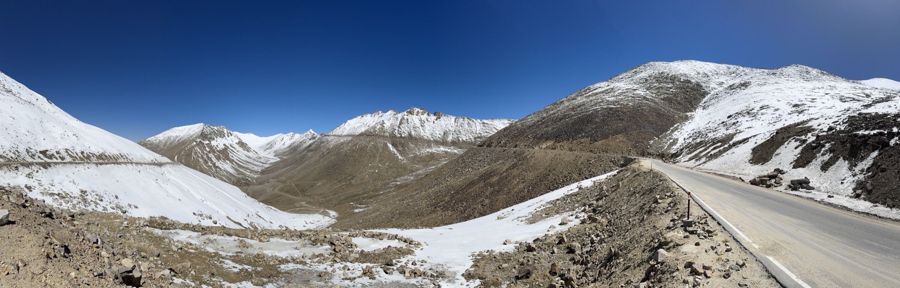
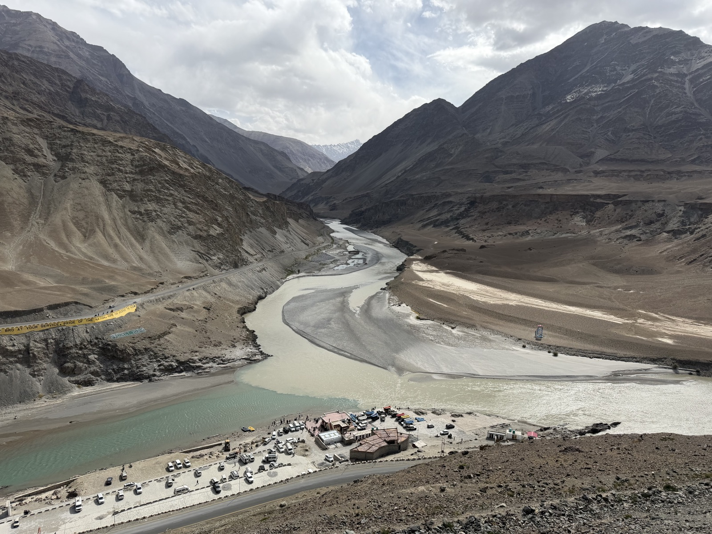
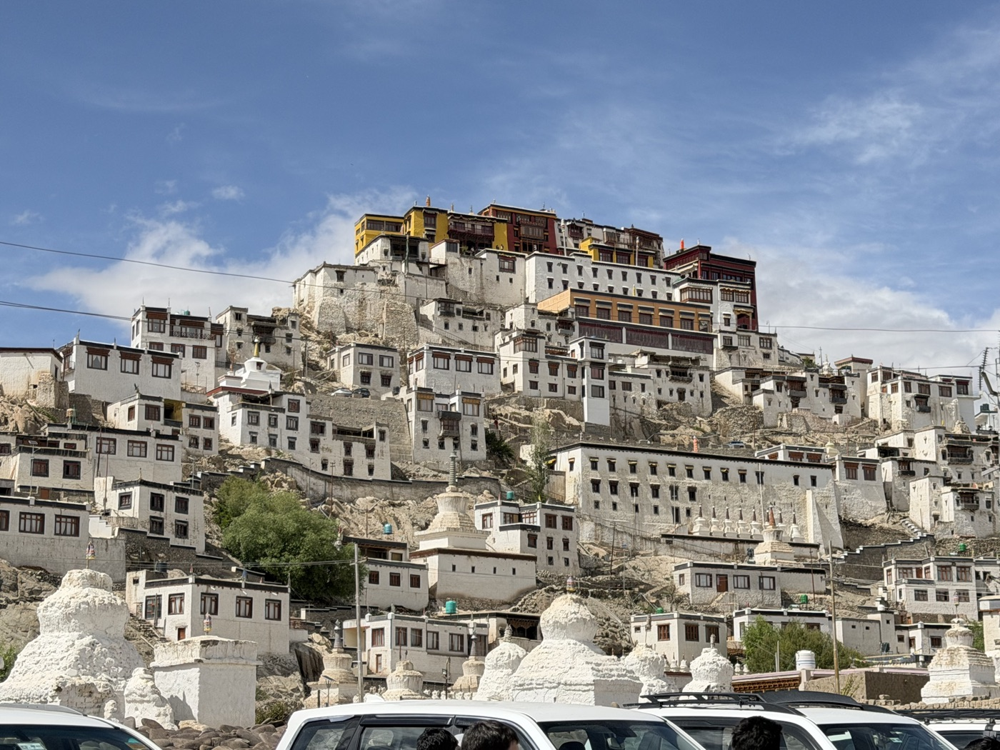
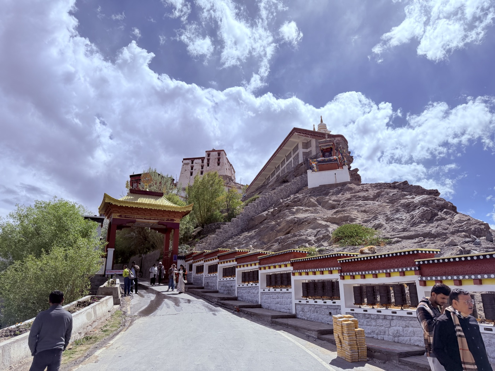
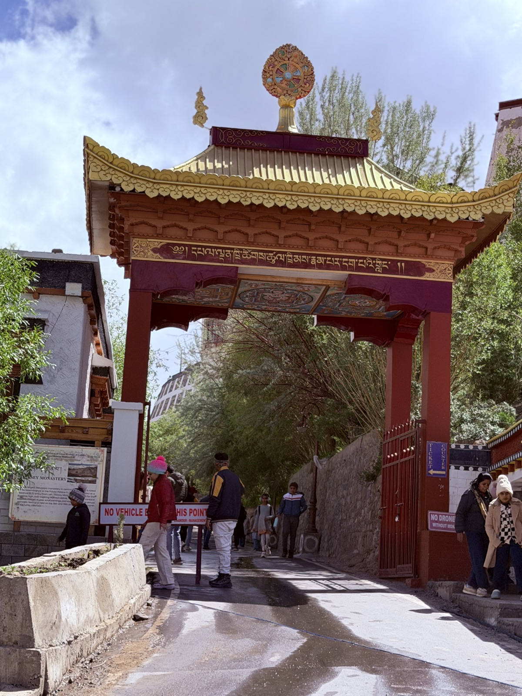
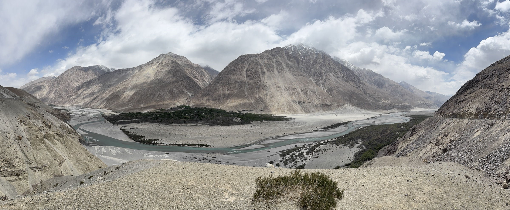
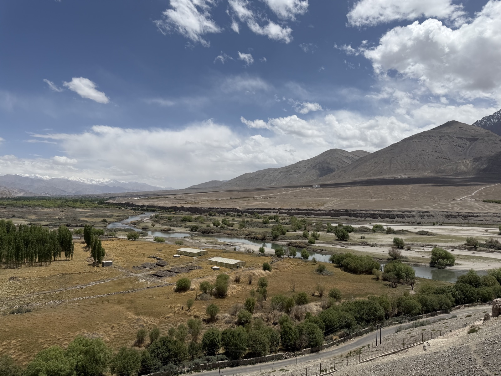
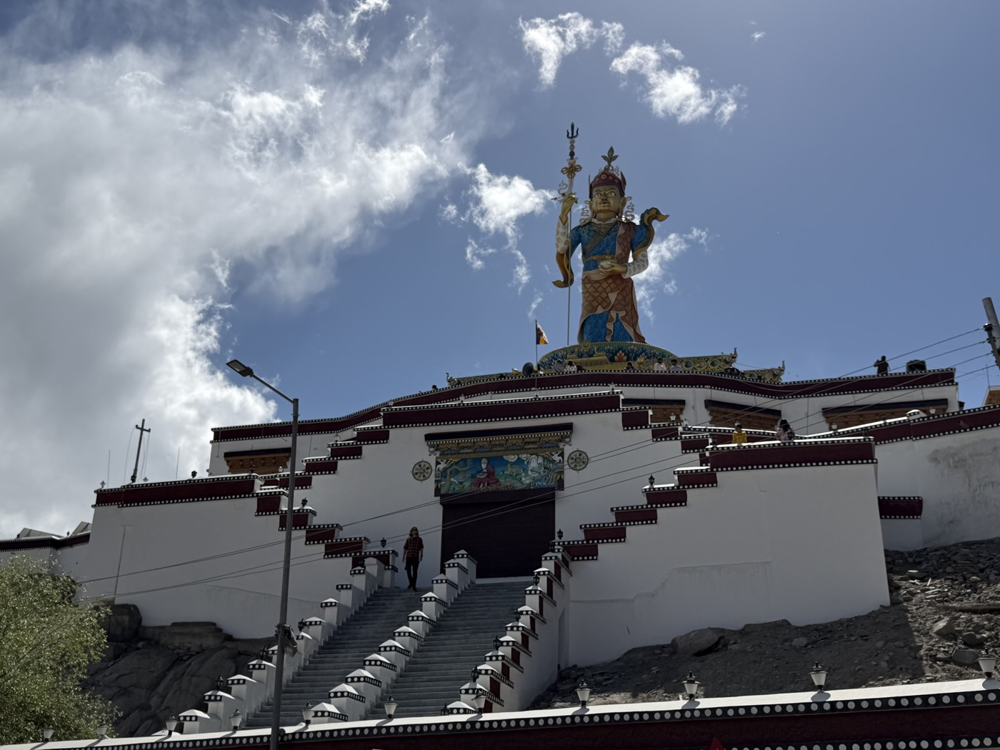
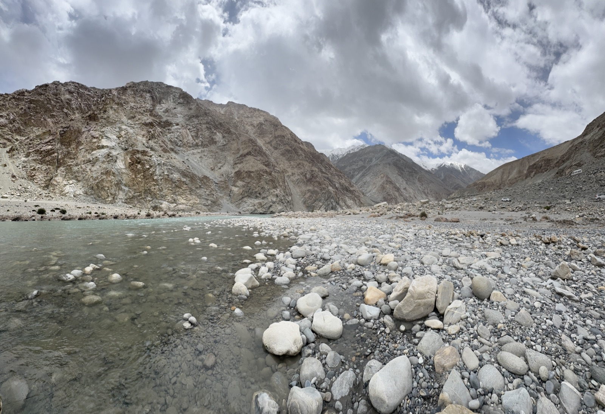
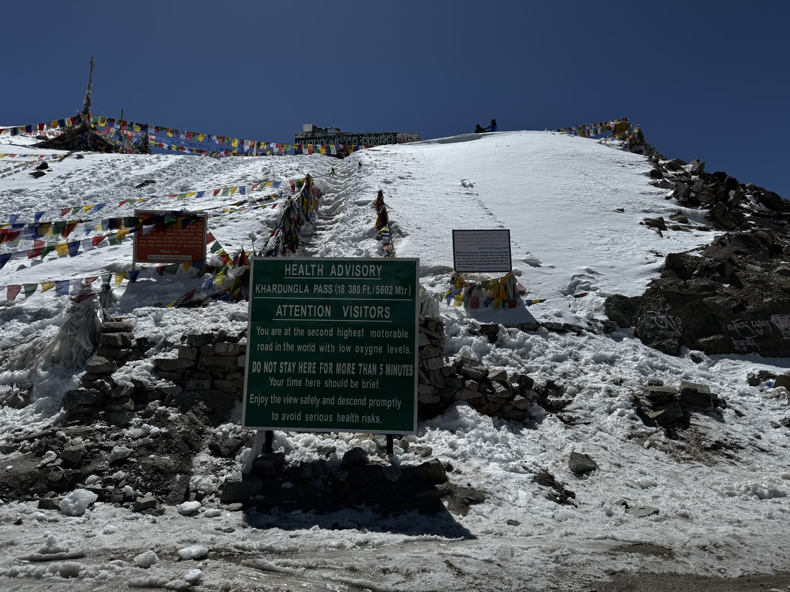
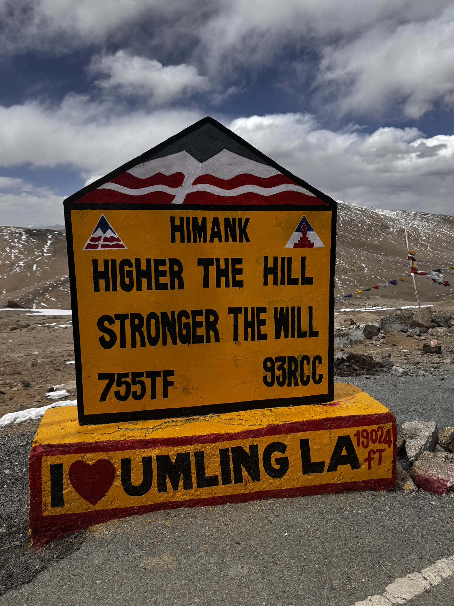
What travellers say
Returning Clients, Warm Referrals
Nazir's clients don't just come back — they send their friends and family too. The same faces return season after season, and many of his bookings come through word of mouth from people who trusted him with their Ladakh journey and wouldn't travel with anyone else.
Get in touch
Start Your Ladakh Adventure
Ready to plan your journey? WhatsApp or a phone call is the best way to reach Nazir — he responds quickly and is happy to discuss your travel plans, however detailed or open-ended they are. You can also drop him an email and he'll get back to you.
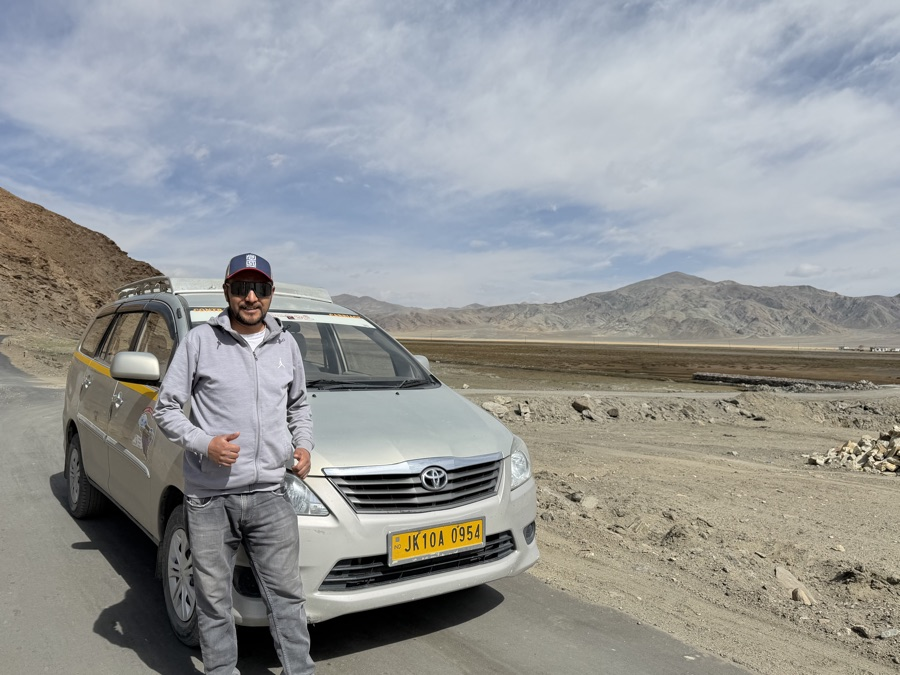
Nazir and his Toyota Innova Crysta — ready to take you anywhere in Ladakh.